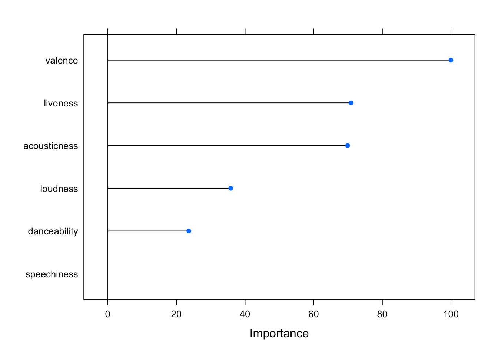
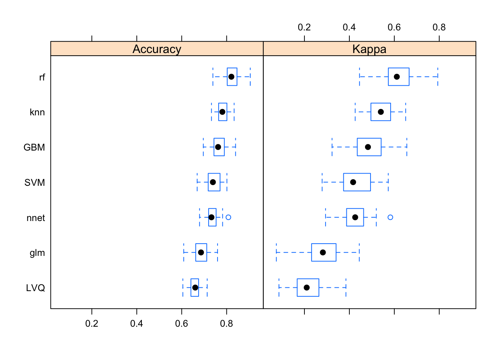
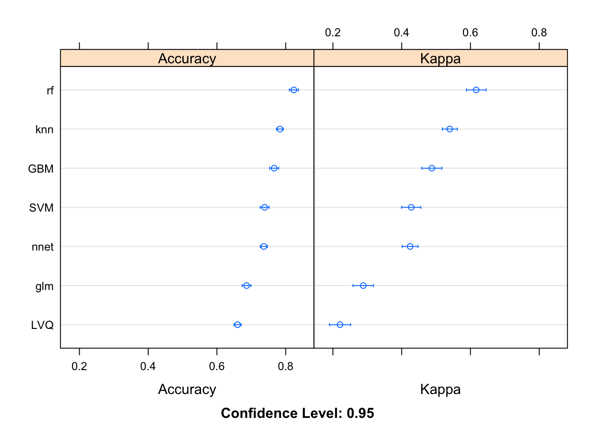
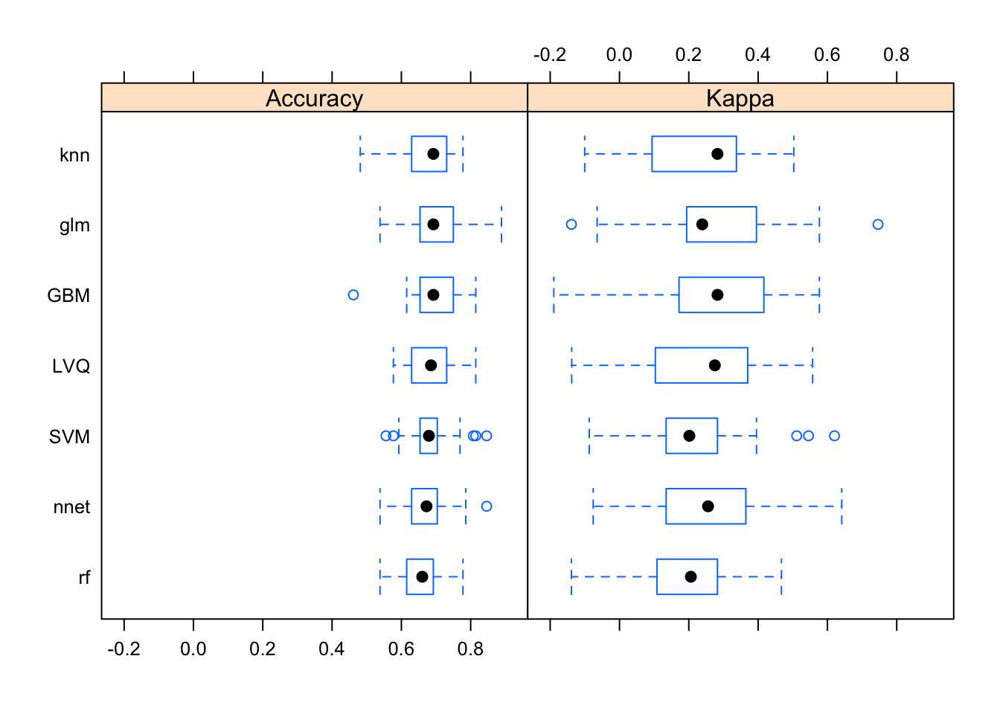

# complete_data <- read_csv(here("data", "attribution_data_new.csv", na.strings=c("","NA", header=T)))
complete_data <- read.csv("../data/attribution_data_new.csv", na.strings=c("","NA"), header=T)
complete_data <- complete_data[,-62]Week 7: Classifying
This Week’s Plan
- Look at running a principal components analysis for authorship
- Work on some models for classifying data
- Discuss how we might evaluate our models
This week, we will start by moving from clustering to PCA, or pricinpal components analysis. PCA is often seen as a way of reducing the dimensions of features, and here we will explore what it looks like when exploring questions of authorship.
We will follow this by looking at what it means to train a classifier, and some of the research questions we might ask of a classifier. ## Getting Started We will be using a of libraries today:
Classifiers
A classifier is a model that assigns a label to data based on the input. There are many types of classifiers, and we will be evaluating various models throughout the week. Our goal will be to train a model on the features generally associated with a category, and then test the accuracy of that model. For now, a good starting point might be our Christmas Song question from last week.
Returning to our Christmas Song Problem
First, let’s get the data and add a column that tells us whether it’s a Christmas song or not
### get the data and add yes/no column.
christmas <- get_playlist_audio_features("", "5OP7itTh52BMfZS1DJrdlv")
christmas$christmas <- "yes"
not <- get_playlist_audio_features("", "6i2Qd6OpeRBAzxfscNXeWp")
not$christmas <- "no"
## combine the two datasets and get the columns we want to use.
christmas_subset <-rbind(christmas, not)
christmas_subset <- christmas_subset %>%
select(c("christmas", "acousticness", "liveness", "danceability", "loudness", "speechiness", "valence"))Now we can use the createDataPartition function from the caret library to create a testing and a training dataset. Here, I’ve chosen a 70/30 partition of training and testing, but you can adjust as you see fit.
Train <- createDataPartition(christmas_subset$christmas, p=0.7, list=FALSE)
training <- christmas_subset[ Train, ]
testing <- christmas_subset[ -Train, ]We can pretty easily implement something like a neural network, using our training dataset to train it:
mod_fit <- caret::train(christmas ~ .,
data=training, method="nnet", importance = "christmas")Once we’ve trained this model, we can test it on our testing dataset, and see how well it does:
pred <- predict(mod_fit, testing)
confusionMatrix(pred, as.factor(testing$christmas), positive = "yes")Confusion Matrix and Statistics
Reference
Prediction no yes
no 30 14
yes 5 16
Accuracy : 0.7077
95% CI : (0.5817, 0.814)
No Information Rate : 0.5385
P-Value [Acc > NIR] : 0.00399
Kappa : 0.399
Mcnemar's Test P-Value : 0.06646
Sensitivity : 0.5333
Specificity : 0.8571
Pos Pred Value : 0.7619
Neg Pred Value : 0.6818
Prevalence : 0.4615
Detection Rate : 0.2462
Detection Prevalence : 0.3231
Balanced Accuracy : 0.6952
'Positive' Class : yes
So what does this all mean? Let’s define some terms.
- Accuracy:
- the accuracy rate. Just how many things it got right.
- 95% CI:
- the confidence interval of the accuracy.
- No information rate:
- given no more information other than the overall distribution, how likely are you to be correct if you just pick the “majority class.”
- if you have an accuracy rate of 80%, but the majority class is 80%, then your model isn’t terribly useful.
- P-Value:
- likelihood of chance.
- Kappa:
- measures the agreement between two raters and ratings. Here it’s looking at the difference between observed accuracy and random chance given the distribution in the dataset.
- McNemar’s Test P-Value:
- this is looking at the two distributions (from a 2x2 table), and determines if they are significantly different,
- Sensitivity:
- given that a result is actually a thing, what is the probability that our model will predict that event’s results?
- Specificity:
- given that a result is not actually a thing, what is the probability that our model will predict that?
- Pos Predictive Value:
- the probability that a predicted ‘positive’ class is actually positive.
- Neg Predictive Value:
- the probability that a predicted ‘negative’ class is actually negative.
- Prevalence:
- the prevalence of the ‘positive event’
- Detection Rate:
- the rate of true events also predicted to be events
- Detection Prevalence
- the prevalence of predicted events
- Balanced Accuracy:
- the average of the proportion corrects of each class individually
What is the model using?
We can look at which features the model is using…
plot(varImp(mod_fit))
Exercise
- Use PCA to explore the works of two artists. How well do they “separate”?
- Run a classifier on two groups (it can be the same two artists, or two distinct groups). How well does your model do?
Wednesday
Today we are going to look at different models and evaluating models. Our research question will be training a model to decipher John Lennon songs from Paul McCartney songs with various classifiers.
John or Paul?
Our research process will follow a simple trajectory:
- Get songs by each artist’s solo career (this can be our ‘ground truth’, as it were).
- Train the model on these pieces, and evaluate the various models.
- Apply the various models to some songs by the Beatles.
Getting the Data
john <- get_artist_audio_features('john lennon')
paul <- get_artist_audio_features('paul mccartney')
both <- rbind(john, paul)What is the balance of pieces like? It looks like we have far more McCartney than Lennon pieces. What does this mean for our model?
table(both$artist_name)
John Lennon Paul McCartney
584 984 We then can grab only the features that we want to explore for this model.
both_subset <- both %>% select(c("artist_name", "acousticness", "liveness", "danceability", "loudness", "speechiness", "valence"))Before running a clustering, PCA, or a classifier such as a k-nearest neighbor, it’s probably good to standardize your data. This means that the data is consistent, and prevents wide ranges from dominating the results. Here we’ve scaled all of our data with the z-score of the data according with the rest of the data for that category.
I’ve also (temporarily) split the data from the artist, and then brought it all back together with cbind.
data <- both_subset[,-1]
artists <- both_subset[,1]
data <- data %>% mutate_all(~(scale(.) %>% as.vector))
both_artists <- cbind(artists, data)Cross-Validation
Cross-validation splits the data up into a testing and training set, and evaluates it.
K-folds cross validation:
K refers to the number of groups that data is split into.
- It randomizes the data
- splits it into the specified number of groups
- for each group, split into a training and testing set, and then evaluate
ctrl <- trainControl(method = "repeatedcv", number = 2, savePredictions = TRUE)Train <- createDataPartition(both_artists$artists, p=0.7, list=FALSE)
training <- both_artists[ Train, ]
testing <- both_artists[ -Train, ]Let’s look at our results with a logistic regression:
mod_fit <- train(artists ~ ., data=both_artists, method="glm", family="binomial",
trControl = ctrl, tuneLength = 10)
testing$artists <- as.factor(testing$artists)
pred <- predict(mod_fit, newdata=testing)
confusionMatrix(data=pred, testing$artists)Confusion Matrix and Statistics
Reference
Prediction John Lennon Paul McCartney
John Lennon 71 57
Paul McCartney 104 238
Accuracy : 0.6574
95% CI : (0.6126, 0.7003)
No Information Rate : 0.6277
P-Value [Acc > NIR] : 0.0983504
Kappa : 0.2248
Mcnemar's Test P-Value : 0.0002886
Sensitivity : 0.4057
Specificity : 0.8068
Pos Pred Value : 0.5547
Neg Pred Value : 0.6959
Prevalence : 0.3723
Detection Rate : 0.1511
Detection Prevalence : 0.2723
Balanced Accuracy : 0.6062
'Positive' Class : John Lennon
It looks like the accuracy is about 76%, but pay attention to the sensitivity and the specificity values.
Recall that sensitivity is a measurement of how well the model can detect a “positive” instance, and specificity measures how well the model is finding true negatives.
Sensitivity can be defined as follows:
Sensitivity = (True Positive)/(True Positive + False Negative)
and specificity can be defined as follows:
Specificity = (True Negative)/(True Negative + False Positive)
So this model is quite good at finding the negative class (here defined as McCartney), but not great at finding the positive class (Lennon).
Other Models
Let’s run the same code again, but now with a k-nearest neighbor. For our sanity, let’s put it into a function.
model_evaluation <- function(method){
Train <- createDataPartition(both_artists$artists, p=0.7, list=FALSE)
training <- both_artists[ Train, ]
testing <- both_artists[ -Train, ]
mod_fit <- train(artists ~ .,
data=training, method=method)
pred <- predict(mod_fit, newdata=testing)
accuracy <- table(pred, testing[,"artists"])
sum(diag(accuracy))/sum(accuracy)
testing$artists <- as.factor(testing$artists)
confusionMatrix(data=pred, testing$artists)
}
model_evaluation("kknn")Confusion Matrix and Statistics
Reference
Prediction John Lennon Paul McCartney
John Lennon 126 56
Paul McCartney 49 239
Accuracy : 0.7766
95% CI : (0.7362, 0.8135)
No Information Rate : 0.6277
P-Value [Acc > NIR] : 2.949e-12
Kappa : 0.5259
Mcnemar's Test P-Value : 0.5582
Sensitivity : 0.7200
Specificity : 0.8102
Pos Pred Value : 0.6923
Neg Pred Value : 0.8299
Prevalence : 0.3723
Detection Rate : 0.2681
Detection Prevalence : 0.3872
Balanced Accuracy : 0.7651
'Positive' Class : John Lennon
Note that it performs quite well! It’s better at finding the “John Lennon” model.
Why do we think this model performed better? A comparison of models can be found here.
Neural Net
A neural net doesn’t seem to do as well.
model_evaluation("nnet")Comparing Models
- Logistic Regression
- K-nearest neighbor
- neural net
- Learning Vector Quantization
- gradient boosted machine
- support vector machine
We can train different models explicitly (without a function) for now.
set.seed(1234)
control <- trainControl(method="repeatedcv", number=10, repeats=3)
# train logistic regression
modelglm <- train(artists ~ ., data=both_artists, method="glm", trControl=control)
# train knn
modelknn <- train(artists ~ ., data=both_artists, method="kknn", trControl=control)
# train nnet
modelnnet <- train(artists ~ ., data=both_artists, method="nnet", trControl=control)
# train the LVQ model
modelLvq <- train(artists ~ ., data=both_artists, method="lvq", trControl=control)
# train the GBM model
set.seed(7)
modelGbm <- train(artists ~ ., data=both_artists, method="gbm", trControl=control)
# train the SVM model
set.seed(7)
modelSvm <- train(artists ~., data=both_artists, method="svmRadial", trControl=control)
# train the random forest
randomforest <- train(artists~., data=both_artists, method="ranger", trControl=control)We can actually look at the resampling of the dataset for each model, and get the results for each model:
# collect resamples
results <- resamples(list(LVQ=modelLvq, GBM=modelGbm, SVM=modelSvm,knn=modelknn, nnet=modelnnet, glm=modelglm, rf=randomforest))
# summarize the distributions
summary(results)
Call:
summary.resamples(object = results)
Models: LVQ, GBM, SVM, knn, nnet, glm, rf
Number of resamples: 30
Accuracy
Min. 1st Qu. Median Mean 3rd Qu. Max. NA's
LVQ 0.6050955 0.6415973 0.6602564 0.6600220 0.6751592 0.7133758 0
GBM 0.6962025 0.7439980 0.7619124 0.7663809 0.7878695 0.8397436 0
SVM 0.6687898 0.7179487 0.7388535 0.7387526 0.7687306 0.8012821 0
knn 0.7324841 0.7647041 0.7809603 0.7832078 0.8012821 0.8333333 0
nnet 0.6794872 0.7208987 0.7324841 0.7363845 0.7527715 0.8076923 0
glm 0.6089744 0.6634820 0.6858974 0.6862284 0.7099359 0.7594937 0
rf 0.7388535 0.8028602 0.8210844 0.8237734 0.8450584 0.9050633 0
Kappa
Min. 1st Qu. Median Mean 3rd Qu. Max. NA's
LVQ 0.08665105 0.1683163 0.2101309 0.2206380 0.2633926 0.3847244 0
GBM 0.32297804 0.4362291 0.4827239 0.4877173 0.5394920 0.6557203 0
SVM 0.27879859 0.3771507 0.4167157 0.4276538 0.4885911 0.5730932 0
knn 0.42590980 0.4981390 0.5401244 0.5399265 0.5824790 0.6505858 0
nnet 0.29398986 0.3882580 0.4259220 0.4245391 0.4615117 0.5824411 0
glm 0.07503888 0.2320983 0.2821086 0.2882337 0.3352471 0.4441770 0
rf 0.44522968 0.5735189 0.6111771 0.6168420 0.6640556 0.7935900 0It might be better to look at the accuracy for each model. Here we have the accuracy rating as well as Cohen’s Kappa, which is like accuracy but also incorporates the imbalance of the dataset.
# boxplots of results
bwplot(results)
Here’s another plot:
# dot plots of results
dotplot(results)
Is it possible to use this for a research question??
What if we use our neural net model but on a different dataset? How about the beatles dataset that is available on Spotify (which admittedly isn’t as much as we’d like).
Grabbing Beatles Data
We can start by getting the data from Spotify:
beatles <- get_artist_audio_features('the beatles')
beatles_subset <- beatles %>% select(c("artist_name", "acousticness", "energy", "instrumentalness", "liveness", "danceability", "loudness", "speechiness", "valence"))Predicting
Now we can use the models that we’ve trained, but on new data. Here we use the random forest and the k-nearest neighbor models.
beatles_knn <- predict(modelknn, newdata=beatles_subset)
beatles_rf <- predict(randomforest, newdata=beatles_subset)Now, we are going to create a data frame of the track name, and both models.
classified_data <- as.data.frame(cbind(beatles_knn, beatles_rf, beatles$track_name))This returns data as either 1 or 2, so we can clean up the columns a bit. Here, if it’s a 2, I label it as “Paul”, otherwise, it’s a “John”.
classified_data$beatles_knn <- if_else(classified_data$beatles_knn == 2, "Paul", "John")
classified_data$beatles_rf<- if_else(classified_data$beatles_rf == 2, "Paul", "John")With the caret package, we can extract the probabilities of each guess. We can also add track info here as needed:
probabilities <- extractProb(list(modelnnet), unkX = beatles_subset)
colnames(classified_data)[3] <- "track"
probability_data <- cbind(probabilities[,1:2], classified_data)
probability_data %>% datatable(filter ="top") (Note that this table doesn’t seem to be rendering correctly when pushed online).
Summary
What I like about this is that we can take something about authorship that we know, and then use it to explore authorship of things that are a little more ambiguous. It can also teach us a fair bit about the specific models. Why do we think some performed so much better than others?
Exercise:
Let’s try to build an east/west coast rap classifier:
Steps!:
- Grab data
- partition and train model
- compare models
- use it to predict a new dataset.
east_coast <- get_playlist_audio_features("", "3pu8tsqTW52aUtYFZN3g4A")
east_coast$coast <- "east"
west_coast <- get_playlist_audio_features("", "6lAOSVxxvGuEhPtZguaeav")
west_coast$coast <- "west"
both <- rbind(east_coast, west_coast)
####standardize and clean a bit
both <- both %>% select(c("coast", "acousticness", "energy", "instrumentalness", "liveness", "danceability", "loudness", "speechiness", "valence"))
data <- both[,-1]
coast <- both[,1]
data <- data %>% mutate_all(~(scale(.) %>% as.vector))
both <- cbind(coast, data)
set.seed(1234)
control <- trainControl(method="repeatedcv", number=10, repeats=3)
# train logistic regression
modelglm <- train(coast ~ ., data=both, method="glm", trControl=control)
# train knn
modelknn <- train(coast ~ ., data=both, method="kknn", trControl=control)
# train nnet
modelnnet <- train(coast ~ ., data=both, method="nnet", trControl=control)
# train the LVQ model
modelLvq <- train(coast ~ ., data=both, method="lvq", trControl=control)
# train the GBM model
modelGbm <- train(coast ~ ., data=both, method="gbm", trControl=control)
# train the SVM model
modelSvm <- train(coast ~., data=both, method="svmRadial", trControl=control)
# train the random forest
randomforest <- train(coast~., data=both, method="ranger", trControl=control)
# collect resamples
results <- resamples(list(LVQ=modelLvq, GBM=modelGbm, SVM=modelSvm,knn=modelknn, nnet=modelnnet, glm=modelglm, rf=randomforest))
# summarize the distributions
summary(results)
bwplot(results)
Now we can test our model on a dataset from outside of our initial training/testing stage:
kendrick <- get_artist_audio_features('kendrick lamar')
kendrick <- kendrick %>% select(c("acousticness", "energy", "instrumentalness", "liveness", "danceability", "loudness", "speechiness", "valence"))
kendrick <- kendrick %>% mutate_all(~(scale(.) %>% as.vector))
kendrick_rf <- predict(modelnnet, newdata=kendrick)
table(kendrick_rf)kendrick_rf
east west
104 38 classified_data <- as.data.frame(cbind(beatles_knn, beatles_rf, beatles$track_name))